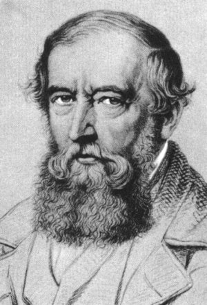

Jakob Steiner

18.3.1796 - 1.4.1863, Bern
Der aus Utzenstorf (Kanton Bern, Schweiz) stammende Autodidakt hatte an der Schule Pestalozzis den ersten mathematischen Unterricht,
vor allem in der Geometrie. Er hörte einige Vorlesungen in Heidelberg und ging dann nach Berlin. Dort galt er bald als
der beste Privatlehrer in Mathematik. Er veröffentlichte mehrere Arbeiten über geometrische Probleme in Crelles neu
gegründetem Journal, wurde 1827 Oberlehrer am Gewerbeinstitut, 1834 a.o. Professor und Mitglied der Berliner Akademie.
Steiner war ein grosser Geometer, dem das Erfassen räumlicher Zusammenhänge mehr lag als irgendein Kalkül. Er schrieb oft mit Jacobi zusammen, der ihm manchmal (mit analytischen Methoden) die Beweise lieferte, die Steiner nicht finden konnte. Eine besonders schöne Leistung Steiners ist seine Lösung des isoperimetrischen Problems. Er zeigte mit einfachen und anschaulichen Mitteln, dass keine vom Kreis verschiedene Kurve das isoperimetrische Extremalproblem lösen kann. Erst Weierstrass hat später darauf hingewiesen, dass damit die gestellte Aufgabe noch nicht gelöst ist: Man muss beweisen, dass das Problem überhaupt lösbar ist. Erst dann kann man mit Steiner behaupten, dass der Kreis unter allen einfach geschlossenen stetigen Kurven von gegebenen Umfang den grössten Inhalt einschliesst. Weierstrass hat diese Ergänzung des Steinerschen Beweises geliefert.
Aus der Fülle von Steiners geometrischen Untersuchungen wollen wir noch eine nennen: Die Sätze über die Möglichkeiten der Konstruktion mit dem Lineal und einem vorgegebenen Kreis.
Mathematiker-Lexikon / Herbert Meschkowski
Steiner war ein grosser Geometer, dem das Erfassen räumlicher Zusammenhänge mehr lag als irgendein Kalkül. Er schrieb oft mit Jacobi zusammen, der ihm manchmal (mit analytischen Methoden) die Beweise lieferte, die Steiner nicht finden konnte. Eine besonders schöne Leistung Steiners ist seine Lösung des isoperimetrischen Problems. Er zeigte mit einfachen und anschaulichen Mitteln, dass keine vom Kreis verschiedene Kurve das isoperimetrische Extremalproblem lösen kann. Erst Weierstrass hat später darauf hingewiesen, dass damit die gestellte Aufgabe noch nicht gelöst ist: Man muss beweisen, dass das Problem überhaupt lösbar ist. Erst dann kann man mit Steiner behaupten, dass der Kreis unter allen einfach geschlossenen stetigen Kurven von gegebenen Umfang den grössten Inhalt einschliesst. Weierstrass hat diese Ergänzung des Steinerschen Beweises geliefert.
Aus der Fülle von Steiners geometrischen Untersuchungen wollen wir noch eine nennen: Die Sätze über die Möglichkeiten der Konstruktion mit dem Lineal und einem vorgegebenen Kreis.
Mathematiker-Lexikon / Herbert Meschkowski